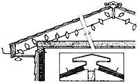

Powered roof vents with thermostatic controls are most effective when used in conjunction with soffit vents. An easy-to-install powered vent can lower attic temperatures up to 30 degrees, reduce cooling loads on a home, and prolong roof life. Remove shingles from between two rafters. Sabersaw a hole for the vent. Then slide the vent into place under the shingles and nail in place. Inside, wire the fan to a junction box.